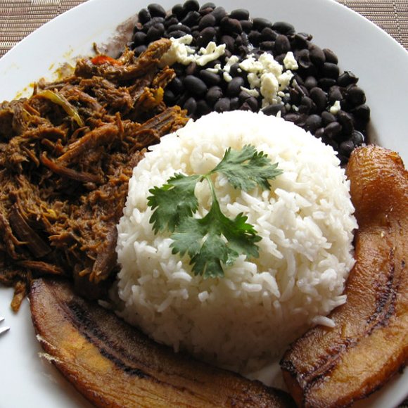

El pabellón criollo antes llamado pabellón nacional, es parte de nuestra cultura, la combinación perfecta de distintos sabores, en el que se equilibran los nutrientes imprescindibles para una alimentación: el arroz (los carbohidratos), la carne (grasas y proteínas), y caraotas negras (los carbohidratos con proteínas vegetales).
¿Sabías que existe el pabellón criollo está ligado a una representación simbólica o metáfora de las cuatro razas que integraron la naciente Venezuela? El arroz por los hombres blancos españoles, las caraotas negras por los esclavos africanos, el plátano los indígenas nativos y la carne que representa a los pardos, provenientes de la mezcla de razas.
Como ves, un buen venezolano no sólo debe saber preparar un buen pabellón criollo, sino que además debe conocer muy bien las creencias alrededor del mismo, a modo de entender nuestra cultura, además lo mejor del pabellón están en su sabor. Hoy te explicamos cómo hacer que todos los platos queden vacíos, con esta deliciosa receta del pabellón criollo venezolano.

Ingredientes
Carne
1 kg de carne de falda de res
2 cebollas grandes
1 pimentón rojo
6 ajíes dulces
1 ramillete grande de cilantro
1 lata de tomates pelados
4 dientes de ajo
Caraotas
500 grs caraotas negras secas
1 cucharadita de bicarbonato
1 cebolla grande
6 ajíes dulces
6 dientes de ajo
Sal al gusto
1 pimentón verde o rojo
Azúcar
Comino
Arroz
1 taza de arroz
2 tazas de agua
1 trozo de pimentón o medio ají dulce
Sal
Tajadas
2 plátanos maduros
Aceite
Preparacion
El pabellón se compone de 4 preparaciones por separado, que unidas logran una deliciosa mezcla de sabores.
Empezaremos con la Carne
En una olla coloca agua suficiente para cubrir la carne, una pizca de sal, cebolla y cilantro, pone a fuego medio a hervir durante 2 horas, cuidando que el agua no se seque y que la carne ablande.
Una vez la carne esté suave, deja enfriar y con calma deshilacha.
Coloca la carne deshilachada, en un sartén con un sofrito de cebolla, pimentón, ají dulce, cilantro y los tomates procesados.
6 ajíes dulces
Añade sal y especias al gusto, recomendamos adobo, comino, laurel o pimienta, dejar guisar durante 30 minutos, hasta que esté jugosa.
Las caraotas
Deja durante 24 horas reposar en agua las caraotas y agrega un poquito de bicarbonato de sodio.
Elimina esta agua, lávalas y colócalas a hervir con un pedacito de cebolla, el ají sin semillas y una ramita de cilantro. Deja cocinar a fuego alto, de ser necesario agrega más agua, preferiblemente, agua caliente y cuando estén blandas baja el fuego.
En un sartén prepara el sofrito de la misma manera que se hizo con la carne, para agregarlo a la olla.
Verifica que las caraotas tengan solo el agua necesaria para cubrirlas completas.
Ve chequeando la sal y los condimentos hasta que el caldo espese.
El arroz
En un sartén precalienta el aceite, con un trozo de pimentón o de ají dulce, agrega el arroz y mueve para aceitar todos los granos
Añade agua y sal al gusto, sube el fuego hasta que hierva para tapar. Luego de que haya hervido baja el fuego, hasta que esté seco y apaga. Deja tapado para que el vapor termine la cocción.
Las tajadas
Calienta el aceite en el sartén.
Pela y corta los plátanos en lonjas
Agrega las tajadas en el aceite caliente para freírlas, y voltea cuando se haya dorado cada lado.
Al dorarse, sácalas del aceite y ponlas a escurrir en un plato con papel absorbente.